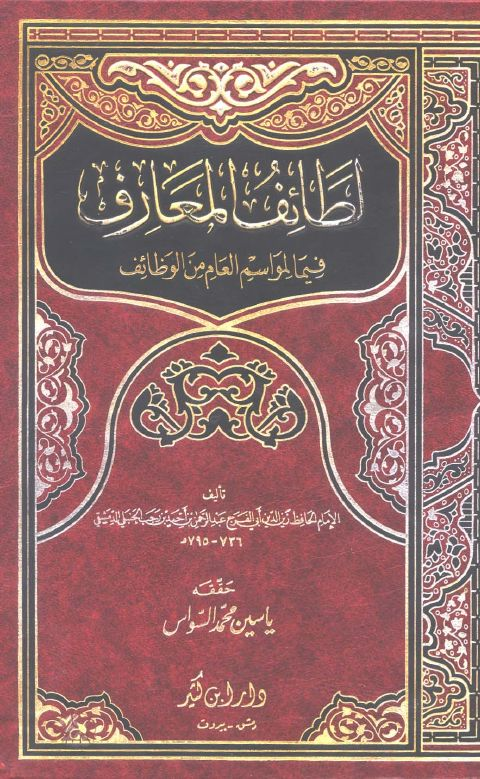
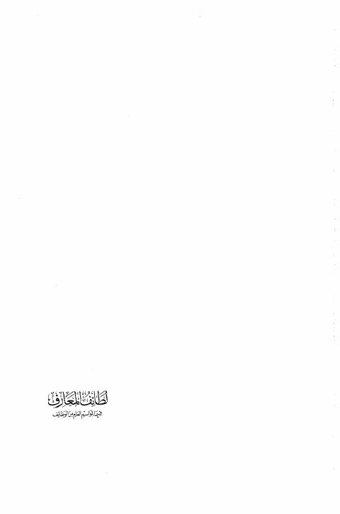

ياسين محمد السواس
Author
Resources

لطائف المعارف فيما لمواسم العام من الوظائف لطائف المعارف فيما لمواسم العام من الوظائف زين الدين أبو الفرج عبد الرحمن بن أحمد بن رجب الحنبلي الدمشقي
لطائف المعارف فيما لموإسم العام من الوظائف لطائف المعارف فيما لموإسم العام من الوظائف عبد الرحمن بن أحمد بن رجب الحنبلي الدمشقي مجالس في سيرة النبي ﷺ
مجالس في سيرة النبي ﷺ
عبد الرحمن بن أحمد بن رجب الحنبلي
مجالس في سيرة النبي ﷺ
مجالس في سيرة النبي ﷺ
عبد الرحمن بن أحمد بن رجب الحنبلي